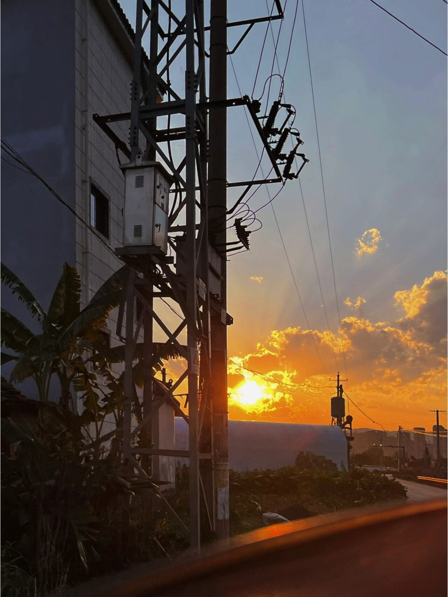
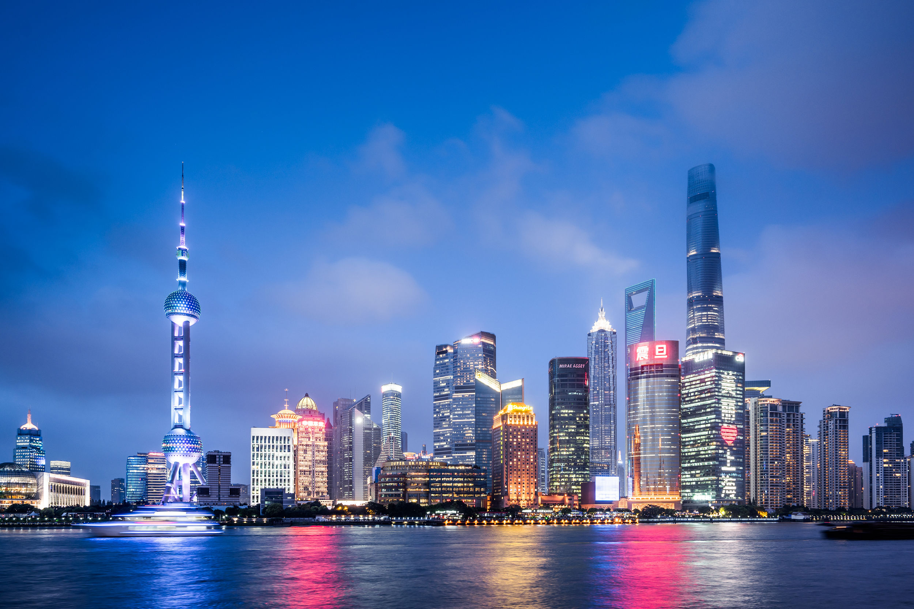
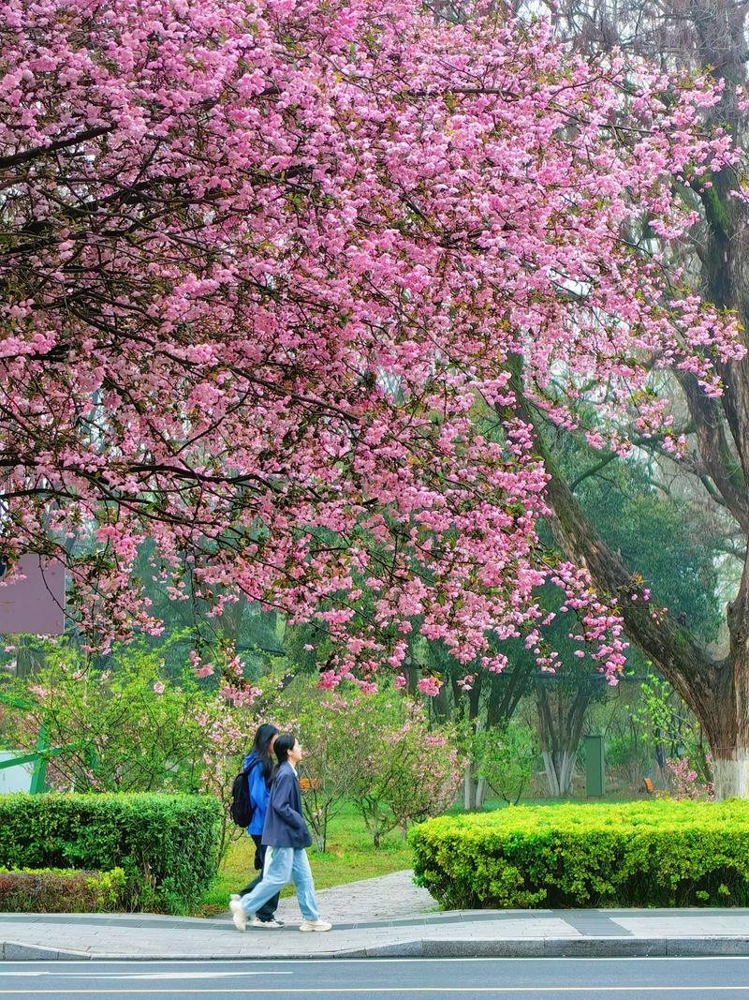
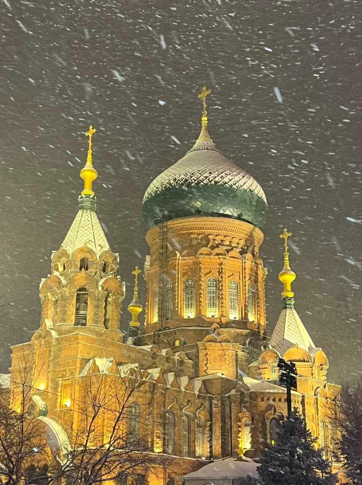

我的摄影作品
这里展示了我近期拍摄的一些作品，每一张照片都记录了一个特别的瞬间

夕阳余晖
拍摄时间：2024年7月
拍摄地点：厦门环岛路
夕阳西下，金色的阳光洒在海面上，形成一条闪耀的金色通道。这一刻让我感受到了大自然的壮美和宁静。
古韵悠长
拍摄时间：2024年3月
拍摄地点：苏州园林
江南园林的精致与典雅在这座建筑中体现得淋漓尽致。拍摄时正值细雨初霁，湿润的空气为画面增添了几分朦胧之美。
山林幽径
拍摄时间：2023年10月
拍摄地点：黄山风景区
清晨的山间小路，薄雾缭绕，阳光透过树叶洒下斑驳的光影。这条小路仿佛通往未知的奇境，充满了诗意和神秘感。

都市之光
拍摄时间：2024年1月
拍摄地点：上海外滩
夜幕降临，城市的灯光渐次亮起，高楼大厦在黑暗中勾勒出璀璨的轮廓。这是我对现代都市生活节奏与繁华的一次视觉记录。

瞬间的情感
拍摄时间：2023年12月
拍摄地点：大学校园
这是一个不经意间捕捉到的真实情感瞬间。那一刻的笑容，那一秒的神态，都是生活中最真实的表达。

银装素裹
拍摄时间：2024年2月
拍摄地点：哈尔滨
一场大雪过后，世界仿佛被披上了一层银装。此时拍摄的照片，洁白中透着宁静，冰冷中蕴含着纯净，是冬日里最美的礼物。